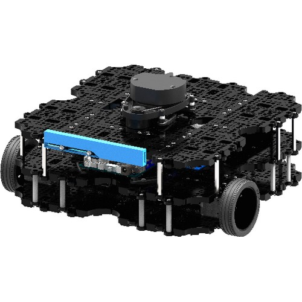
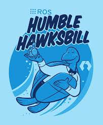

Certains robots nécessitent des adaptations et du code utilisant la librairie python ROS2 pour pouvoir être contrôlé. Dans le cadre de notre projet, nous devions mettre en place une base de programme pour le robot Bittle de la marque Petoi mais également pour le robot TurtleBot3 Waffle Pi. Contrairement au robot Bittle, le robot TurtleBot3 Waffle Pi a besoin d’une partie de code en ROS pour pouvoir recevoir les commandes venant de la partie controller du projet et les appliquer.

Image d'un TurtleBot3 Waffle Pi
Dans cette partie du projet, il fut alors nécessaire de comprendre les prérequis du fonctionnement de ROS2 et le fonctionnement du TurtleBot3 permettant de mettre en place un code adaptant les commandes de bases de déplacement d’un robot ainsi qu’un arrêt d’urgence. Pour permettre à notre programme d’être facilement installable et d’avoir une bonne base de travail pour les étudiants continuant à travailler sur ce projet et cette partie du projet, les principaux points de travail de cette partie ont consisté à mettre en place des fichiers de commandes bash d’installation des composantes de ROS sur un nouveau système, avec également un fichier bash de build du code dans le dossier en paramétrant correctement le système, et au final les lignes restantes de codes à lancer en documentation pour permettre de lancer facilement le programme de réception des commandes de déplacement du TurtleBot3.
ROS 2, ou Robot Operating System 2, est une plateforme middleware open source conçue spécifiquement pour le développement de robots. En tant que successeur de ROS, ROS 2 offre des améliorations significatives en termes de modularité, de performance, et de prise en charge des systèmes distribués. Son architecture flexible en fait un choix privilégié pour des robots diversifiés tels que le TurtleBot3 Waffle dans notre cas.
Au cœur de ROS 2 réside un middleware de communication robuste qui facilite l'échange d'informations entre les différents composants du système. Grâce à son architecture distribuée, ROS 2 permet la communication entre les nœuds logiciels, même s'ils s'exécutent sur des machines physiques distinctes.
Dans notre cas, ROS 2 est utilisé pour faciliter la communication avec le TurtleBot3 et est utilisé pour lancer et gérer les différents packages permettant le fonctionnement de ce robot. Il existe de nombreuses versions de ROS 2 et dans notre cas, nous avons utilisé la version Humble. N’étant pas forcément un utilisateur aguerri de Linux et pour penser aux autres personnes dans ce cas précis, il fut évident en regardant la documentation sur l’installation de ROS 2 qu’il serait nécessaire d’essayer de faciliter cela au maximum pour les étudiants commençant à travailler sur le projet tout en permettant de facilement relire, comprendre et adapter si nécessaire les fichiers d’installations.

Logo de ROS Humble
Une difficulté importante qui apparaît alors lors de ce projet fut la difficulté d’installation de ROS 2 en évitant les bugs. Dans notre cas, il est nécessaire de pouvoir rapidement installer ou réinstaller ROS 2 dans une carte de contrôle de type Raspberry PI contrôlant les différents robots TurtleBot3.
Une bonne partie du travail sur la production du code ROS 2 fut alors de réaliser des fichiers bash d’installation de ROS 2 et de build du code ROS 2 du projet. Concernant le fonctionnement de ROS 2, lorsqu’une personne souhaite installer la version humble de ROS 2, il est nécessaire de télécharger la clé gpg de ROS 2 puis d’installer ros2-humble, suivi de ros-dev-tools et libudev-dev. De plus, pour ne pas avoir d’erreur de lancement de ROS, il faut également installer python3-colcon-common-extensions pour utiliser la commande de build « colcon build ». Concernant les dépendances, il est nécessaire également d’installer la version 58.2.0 de setuptools précisément pour permettre de faire fonctionner les commandes de lancement ROS 2. Puis enfin, il faut ajouter le fichier setup.bash de ros dans le fichier bashrc du système pour que le terminal de commande Linux reconnaisse les commandes ROS 2.
Avec les possibles erreurs de dépendances venant de ROS 2, il semblait alors évident qu’en premier lieu, mettre en place un fichier bash permettant d’installer facilement une version fonctionnelle de ROS 2 dans le cadre de ce projet soit nécessaire.
Une fois les différents modules de ROS2 correctement installé, il a été nécessaire de réaliser ensuite un programme spécifique au TurtleBot3 Waffle Pi permettant de le contrôler avec la manette et les commandes venant de notre contrôleur. Le module python installé sur le robot doit recevoir les commandes depuis un autre module connecté au même réseau via un socket. Le programme est alors composé de deux sockets. Un socket recevant les commandes de déplacement, qui ensuite converti la commande de déplacement en une augmentation de la vitesse dans une direction sous le format compris par le Turtlebot3 et un autre socket d’arrêt d’urgence qui si sollicité, va arrêter le mouvement du robot et empêcher le socket de déplacement de recevoir d’autres commandes et alors de déclencher de nouvelles commandes de conduite des moteurs du robot.
Dans le cas du TurtleBot3, il est possible de le commander en utilisant une commande Twist(). Un objet Twist() contient une vitesse linéaire en X, en Y et en Z et une vitesse angulaire également en X, Y et Z. Une fois l’objet créer, il peut être publié sur un publisher ‘cmd-vel’ particulier qui est réceptionné par un autre module de TurtleBot3 Waffle Pi qui déclenche ensuite le moteur en respectant les vitesses entrées dans l’objet Twist(). Pour faire fonctionner un TurtleBot3 Waffle Pi, il est alors nécessaire en utilisant notre système d’avoir le module réceptionnant les commandes du contrôleur, ainsi que le module réceptionnant la commande Twist() et le transformant en commande moteur. Le code de contrôle est plutôt simple une fois ces principes compris. Le code reçoit la commande, ajoute de la vitesse dans la direction souhaitée en fonction de la commande réceptionné puis transmet la commande.
Nous avons pu réaliser un code simple permettant de contrôler le TurtleBot3 Waffle Pi avec notre système, mais celui-ci est sujet à de nombreuses améliorations, notamment à l’implémentation de l’odométrie, puisque dans certains cas, le TurtleBot3 possède également des informations sur la distance parcourue, ou des informations venant d’un Lidar s’il en possède un. Malheureusement dans cette partie, nous avons pu voir qu’il semble assez complexe de faire un code ROS2 général correspondant à tous les robots utilisant ROS2, puisque de nombreuses différences sont notables entre les différents fonctionnements des robots. Mais nous avons pu implémenter une base d’installation et de convertissement de la commande venant du contrôleur.